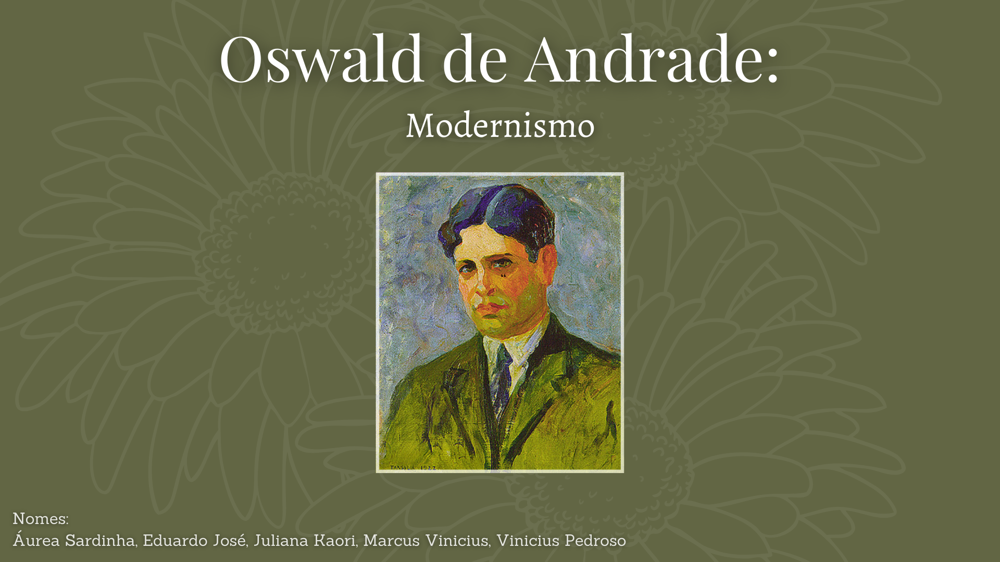
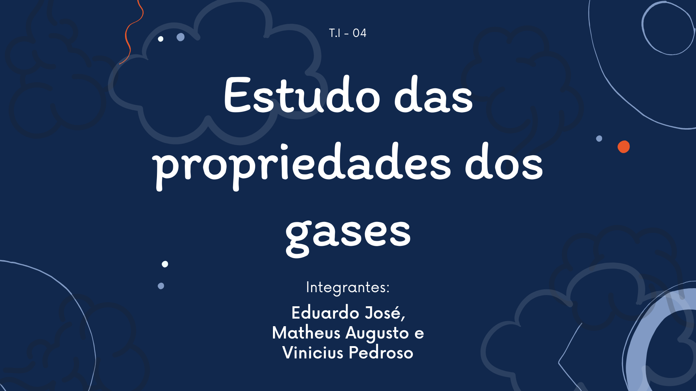
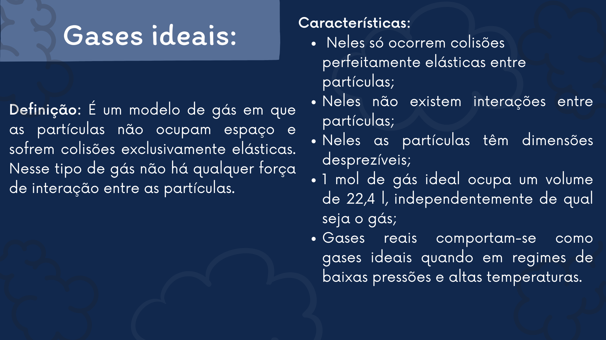
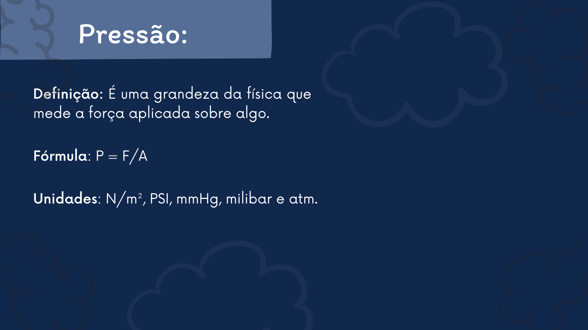

Oswald De Andrade (Linguagens)
Trabalho de artes realizado no primeiro ano do ensino médio. Conta a vida de Oswald De Andrade, e sua trajetória na arte, com o tema da semana de arte moderna.





Estudo Da Propriedade Dos Gases (CN)
Trabalho de Ciências da Natureza, com foco em química, realizado no primeiro ano do ensino médio. Explica como os gases funcionam, e suas utilidades.
Guerras Justas & Guerras Biológicas (CH)
Trabalho de Ciências Humanas e Sociais, com foco em História, realizado no primeiro ano do ensino médio. Explica as guerras justas e biológicas que aconteceram na época da colonização do Brasil.